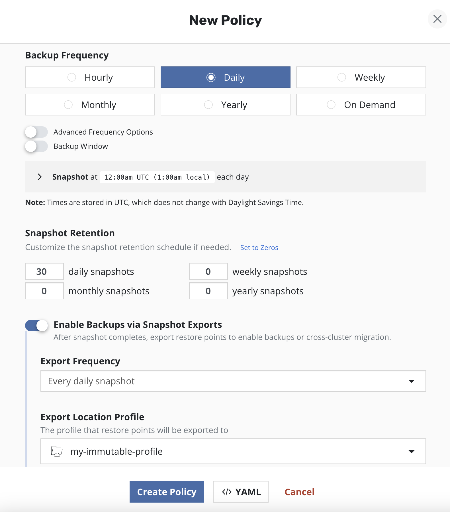
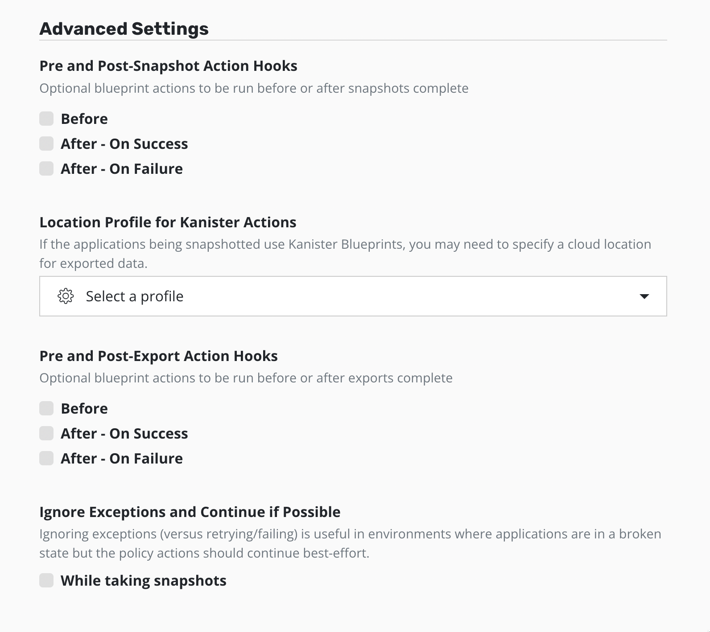
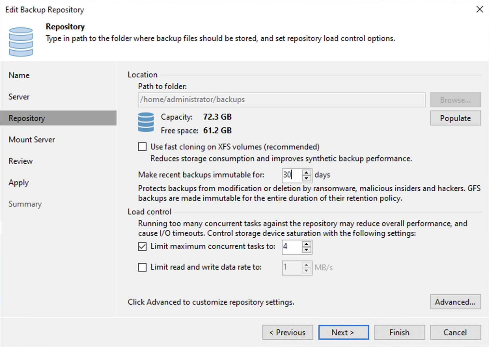

From Veeam Data Platform Admin
to Veeam Kasten Admin
You already know how to protect an estate: build a job, point it at a repository, set retention, prove the restore. This module carries that model across to Veeam Kasten for Kubernetes — naming each concept's counterpart, and the exact point where each parallel stops being safe to lean on.
- Explain why protecting a Kubernetes application is a different problem than protecting a virtual machine
- Map five Veeam Data Platform concepts onto their Veeam Kasten counterparts, and state where each analogy breaks
- Distinguish a Veeam Kasten snapshot from an exported backup, and say why a snapshot on its own is not a backup
- Describe what Veeam Kasten puts inside a cluster, and how its two editions differ
- Explain where a Veeam Backup & Replication repository fits as an export target, and the constraints that come with it
Why this is a different problem
First, the shape of the problem has to change in your head. This section shows what a Kubernetes application is made of, why "back up the disk" no longer describes the job, and what kind of product Veeam Kasten is.
In your Veeam Data Platform world, the thing you protect has an edge you can point at: a virtual machine is a name in an inventory, a set of virtual disks, a configuration file. Select it, and the boundary of what you captured is obvious.
Kubernetes gives you no such object. What a Veeam Kasten policy protects is defined as all of the following, captured together a defined termapplicationIn Veeam Kasten, "application" is a defined technical term, not a loose word — it is the whole collection of Kubernetes objects listed here, captured together as one protected unit.. Do not stop to decode the object names below — Module 02 defines every one of them; what matters here is how many kinds of thing make up one application:
- Namespaced Kubernetes resources, such as ConfigMaps and Secrets
- The relevant non-namespaced resources the application uses, such as StorageClasses
- The Kubernetes workloads themselves — Deployments, StatefulSets, OpenShift DeploymentConfigs, standalone Pods
- The deployment and release information available from Helm v3 (Kubernetes' package manager — Module 02 covers it, so file the term away for now)
- All persistent storage resources associated with those workloads: the PersistentVolumeClaims and PersistentVolumes
Most of those objects hold no data at all — they hold the shape of the running system. Capture the volumes but miss the Secrets, and the restored application starts and then fails to authenticate. The data is the straightforward part; the assembly is the hard part.
A low-grade discomfort here is the normal reaction — platform engineers feel the same about data protection, from the other direction. Underneath the vocabulary this is still storage, networking, Linux, and databases you have protected for years. Capture a point in time, then get a copy off the storage it lives on: the vocabulary changes, the job does not.
What changes about the job
Two ideas to carry forward
If only two sentences survive the week, make them these two.
A namespace-scoped application with all its parts — and the parts that are not data matter as much as the parts that are.
Two separate policy actions with two separate lifetimes — Section 03 is entirely about this.
A platform engineer will eventually ask: "everything lives as code in Git — if the application dies, we redeploy. Why back it up?" Half right: Git holds the application's shape, not what it accumulated at runtime — PersistentVolume contents and state on the cluster — which is why the protected application is defined to include the persistent storage, the Secrets, and the rest of the list above; kubectl apply brings back the code, not Friday's transactions. The asker is usually a team whose applications you protect but do not own — agree explicitly on who is accountable for which layer.
What Veeam Kasten for Kubernetes is
Veeam Kasten for Kubernetes is a data management platform built for exactly this problem: it thinks in applications rather than machines, everything runs through policies, and you drive it from a web-based user interface or its native Kubernetes application programming interface (API) — whichever you reach for first.
It does three jobs. The first two you already own conceptually; mobility has no clean Veeam Data Platform equivalent — because applications are described in portable manifests, cross-cluster movement is a first-class feature rather than a recovery edge case.
Backup and restore
Protect an application and bring it back — into the same namespace, a different one, or a different cluster.
Disaster recovery
Recover when the cluster or the site is gone, including recovering Veeam Kasten's own catalog.
Application mobility
Move an application and its data across clusters, and potentially across clouds, using a location profile.
Scheduling, retention, and proving a restore all transfer. The assumption that the protected thing has one obvious boundary does not. Build the habit of asking "which objects did that capture?" — the question this product is designed around.
Five concepts you already run
The backbone of the module: five concepts you operate every day, each paired with its Veeam Kasten counterpart — and the place where each analogy quietly stops being true. The full map repeats as a table underneath for later scanning.
The map on one page
| What you run today | Veeam Kasten counterpart | Where the analogy breaks |
|---|---|---|
| Backup job | Policy | Membership is an evaluated selection, not a curated list |
| Backup repository | Location profile | The target is managed by Veeam Kasten and not yours to touch |
| Snapshot versus backup | Snapshot versus export | The export is a separate action you have to enable |
| Application-aware processing | Kanister blueprints and action hooks | An object you deploy and bind, with reserved action names |
| Proxies and agents | In-cluster services in kasten-io | You do not size or place them; the cluster does |

In the dashboard, translate out loud: "this is the job list, this is the repository list." Naming the counterpart pays for itself — when it fails, and the snapshot-versus-export row will fail it, the failure is loud enough to notice.
A snapshot is not a backup until you export it
The single most expensive misunderstanding available to an arriving Veeam Data Platform administrator, so it gets its own section. The three stages below let you look at any policy and answer the question that matters: if the storage went away tonight, what would still exist tomorrow?
Snapshots are the basis of persistent data capture in Veeam Kasten, and they are genuinely good: on most storage systems the performance impact is low, no downtime is needed, restores are quick, and capture is incremental — which is why every policy starts from the snapshot action.
Now the limits: storage snapshots suffer relatively low limits per volume or per array, and they are not always durable — a catastrophic storage failure destroys snapshots along with primary data, and on a number of systems a snapshot's lifecycle is tied to its source volume, so deleting the volume may garbage-collect every related snapshot. The documented guidance is direct: create durable backups by exporting the data.
One nuance: a number of public cloud providers store snapshots in object storage, retained independently of the primary volume's lifecycle — though not all do, and exports may still be worthwhile for safety. "Snapshots are never durable" is too strong; "you do not get to assume they are" is right.
A snapshot-only policy reports success indefinitely — compliance fine, history green, restore points real — until the storage holding them fails and the snapshots go with the primary data. Nothing in the policy's own status will ever tell you this. The check is structural, not operational: does this policy export, and to where?

The separation is also a cost lever. The documented guidance: reduce local retention, which can be more expensive, and increase remote retention, which is more cost-effective — shorter retention on snapshots, extended periods on exports, or two policies where one snapshots without exporting and the other snapshots and exports.
What gets deployed, and which edition
Two practical questions you will ask early: what does this put on the cluster, and what am I licensed for? Neither answer is complicated, and both change how you talk with the platform team who owns the cluster.
It is a workload on the cluster it protects
Veeam Kasten is deployed into its own namespace, kasten-io by convention, and runs as a set of Pods there. You confirm an install like any Kubernetes workload — list the Pods in that namespace and wait for all of them to reach Running.
kubectl get pods --namespace kasten-ioThat one command replaces much of your old troubleshooting surface: no proxy server to log into, no agent versions to reconcile, no separate management host — the concept map's services are all Pods in that namespace. Module 03 covers getting them there, a Helm install of the kasten/k10 chart; Module 04 covers watching them as the workload they are.
Supplementary · optional Why the product's technical strings still say k10
The product is Veeam Kasten for Kubernetes, and that is what you call it. The string k10 you will nonetheless meet constantly is not a mistake — it is the chart and release name in the documented install command:
helm install k10 kasten/k10 --namespace=kasten-io
Treat those as identifiers, like a service name in a config file: type what the documentation types, and use the product's name when you write or speak.
Two editions, one install
Veeam Kasten is available in two editions. Both use the same container images and follow an identical install process — so the edition question is a licensing conversation, not an architecture one.
Veeam Kasten Free — the Starter edition
Enterprise
"Functionally the same" is a phrase to read carefully rather than gratefully. A proof of concept on Starter demonstrates real behaviour — a genuine advantage — but a Starter deployment is not a supported production deployment: the limits are on support and scale, exactly what you need when a restore matters.
Exporting to a Veeam Backup & Replication repository
Your existing estate re-enters here: a Veeam Backup & Replication repository can be the destination a Veeam Kasten policy exports to, so Kubernetes data lands in storage you already own, monitor, and pay for. What follows is what that gives you and the constraints attached — including one that has caught experienced administrators.
A Veeam Repository can serve as the destination for both the application metadata and the persistent volume snapshot data, for any cluster where a Veeam Backup & Replication repository is available and the storage provisioner for the persistent volumes supports block mode export. In location-profile terms it is one more target type alongside object storage and NFS or SMB file storage.
What arrives on the other side looks reassuringly familiar: a Veeam Backup & Replication backup job is created for each Veeam Kasten policy — a Veeam Kasten catalog identifier appended to the job name keeps clusters backing up to the same server distinct — and each protected application namespace produces a single, separate restore point object. Following export, each backup is converted to a synthetic full backup.

The constraints to know before you promise it
| Constraint | What it means for you |
|---|---|
| Block mode export is mandatory | All volume snapshots the policy creates must use the block mode export mechanism; selecting a Veeam Repository as the Export Location Profile enables it automatically. The storage provisioner has to be capable of block mode exports. |
| Not every repository type qualifies | Export to Veeam Backup & Replication direct object storage repository types is not supported. |
| One backup server per instance | Each Veeam Kasten instance may export to a single, unique backup server; multiple location profiles may point at separate repositories on that server, and multiple instances may integrate with the same server. |
| Copies made downstream are not restore sources | Copies made inside Veeam Backup & Replication — export to a scale-out backup repository (SOBR), backup copy jobs, backup to tape — cannot be directly restored in Veeam Kasten. |
| One object per export, not per volume | Each export's volume data is uploaded by a single datamover Pod and stored as a single object in the repository, however many persistent volumes the policy protects. |
Read the fourth row again, because it inverts a reflex: your instinct with any new data source is to get it into the wider protection chain — copy it out, tier it, send it to tape. Those copies remain valid Veeam Backup & Replication restore points, but Veeam Kasten cannot restore an application directly from them. Decide deliberately which copy your Kubernetes recovery plan depends on, and write it down.
The value is an operating model, not a feature list: a customer adopting Kubernetes does not have to stand up a parallel backup estate — the Kubernetes applications export into the repository their virtual estate already uses, appearing as an ordinary backup job with the Veeam Kasten catalog identifier appended to its name. The constraints above are the honest fine print to raise yourself rather than have discovered later.
Two more things worth holding. A manual export not associated with a policy produces a standalone K10ManualBackup backup job containing the application namespace, saved as a full, independent VeeamZIP backup. And an exported restore point can be imported and restored on another supported cluster, provided the target is configured with the same Veeam Repository location profile used for the volume data — application mobility using storage you already run.
Check your understanding
Five questions on the concept map, snapshot versus export, the two editions, and the Veeam Backup & Replication integration. Each has a single best answer, and every option tells you why it is right or wrong.
What you covered
You now have a translation layer between the product you know and the product you are learning — and, more usefully, you know where it leaks on each of the five concepts.
Next, Module 02 turns the Kubernetes words used loosely here — namespace, workload, PersistentVolumeClaim, StorageClass, Helm — into working vocabulary, still through a backup administrator's eyes.